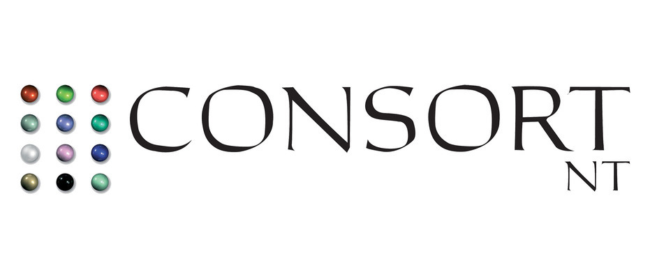

SAMIR LAHLOU
DÉVELOPPEUR JAVA/JEE JUNIOR
Samir Lahlou. Développeur JAVA étudiant à Simplon.co.
J'ai achevé un stage chez ERSS SAS en développement JAVA du 15 janvier au 16 février.
Je suis orienté développement back-end avec les langages JAVA, JAVA EE, Spring, et PHP
et front-end manipulant HTML, CSS, and JavaScript.
N'hésitez pas à survoler les icônes sur la gauche pour davantage d'informations, ou cliquer sur le boutons ci-dessous pour visualiser mon CV vidéo.
×
SKILLS
Front-endBack-end
Mobile
EXPÉRIENCES PROFESSIONNELLE
Octobre 2014 - Mai 2016: Technicien Helpdesk N2/Proximité
Technicien Helpdesk N2 et proximité - Econocom. DSI Hermès Paris
Résolution d'incidents, administration systèmes et réseaux, rédaction de procédures.

Septembre 2013 - Octobre 2014: Technicien Helpdesk N1/N2
Technicien Helpdesk N1/N2 - Consort NT. DSI BP2I
Résolution d'incidents, reprise de contexte, astreinte international.